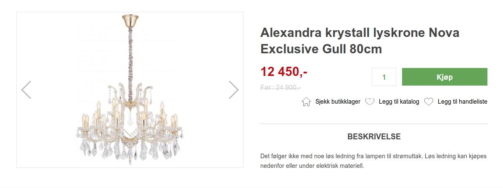
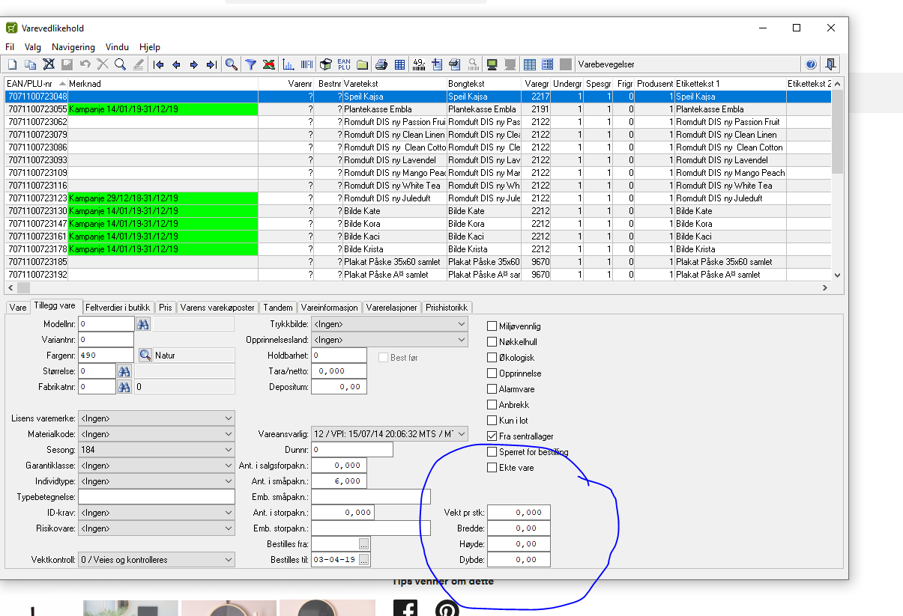
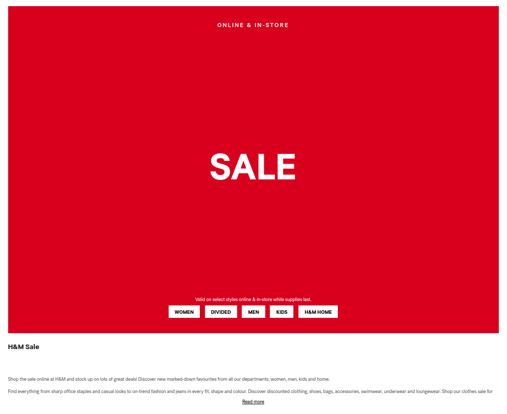
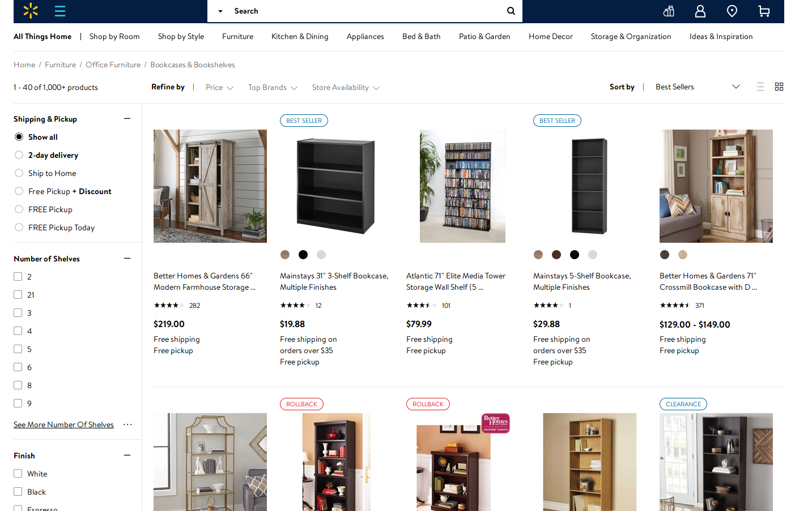
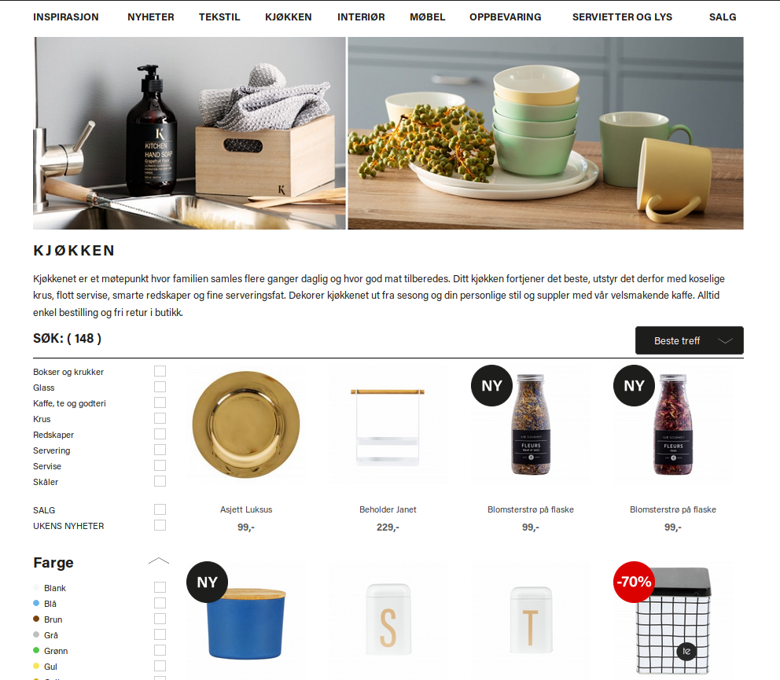
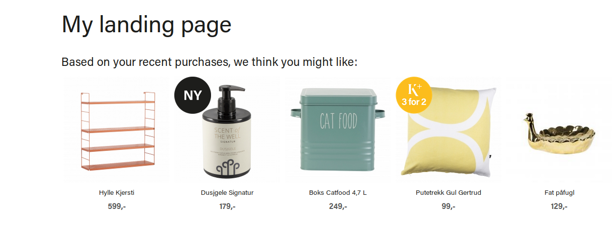
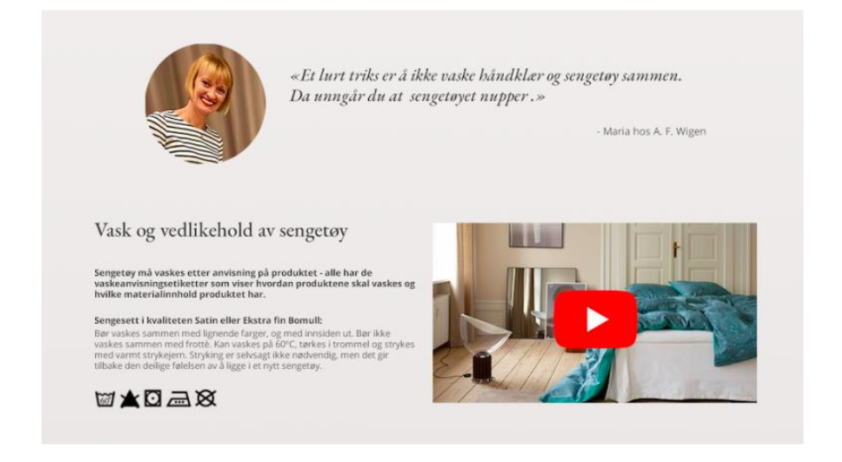
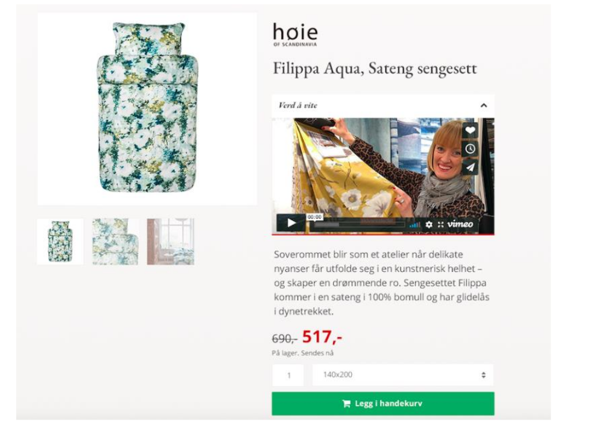
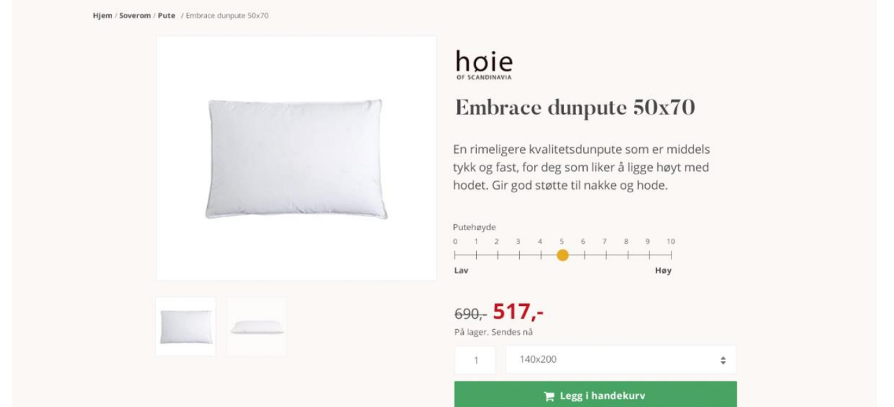

- Eirik S. Morland / Ny Media
- [@orkj](https://twitter.com/orkj) / [eiriksm@d.o](http://drupal.org/u/eiriksm) / [eiriksm@github](http://drupal.org/u/eiriksm)
### Who am I
- Eirik S. Morland (eiriksm) / @orkj
- Work as team leader and senior developer at Ny Media
- We have more than 15 years of experience in Ubercart, Commerce 1, Commerce 2
Partly based on reasearch work from 3 master students in Media, Communication and Information Technology.
___Aalberg, Vindheim, Bech (2019)___
Agenda
1. The aquarium scene:
Content and commerce meets
2. The balcony scene:
Content and commerce is meant for each other
3. The dramatic ending:
What does the world think of the relationship?
## Meet Romeo
## Meet Julian
## 1. The aquarium scene


> Use clear, professional pictures of high quality and text with a lot of product information.
___Aalberg, Vindheim, Bech (2019)___
>“Or if thou wilt not, be but sworn my love, And I'll no longer be a merchant”



## Personilization of content

> Almost all respondents say that they like to be inspired from articles about the products and how they can be used.
___Aalberg, Vindheim, Bech (2019)___
> Almost all respondents say that they value high competence from the store representative
___Aalberg, Vindheim, Bech (2019)___



> All respondents preferred an image showing the product placed in an environment
___Aalberg, Vindheim, Bech (2019)___
## The dramatic ending
### Drupal commerce integrates with:
- ERP systems
- Payment providers
- CRM systems
- Tax services
- Shipping services
But also Content?
## Thank you
- Slides at [https://eiriksm.github.io/content-driver-ecommerce-ddd19/](https://eiriksm.github.io/content-driver-ecommerce-ddd19/)
- PS. We are hiring for all positions, remote friendly
- Contact me via eiriksm / drupal.org or twitter / @orkj